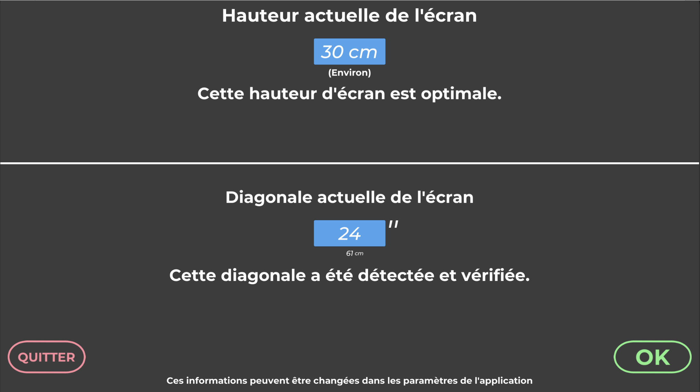
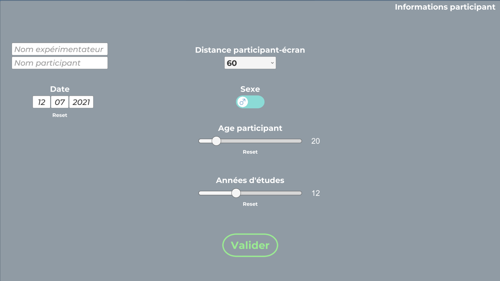
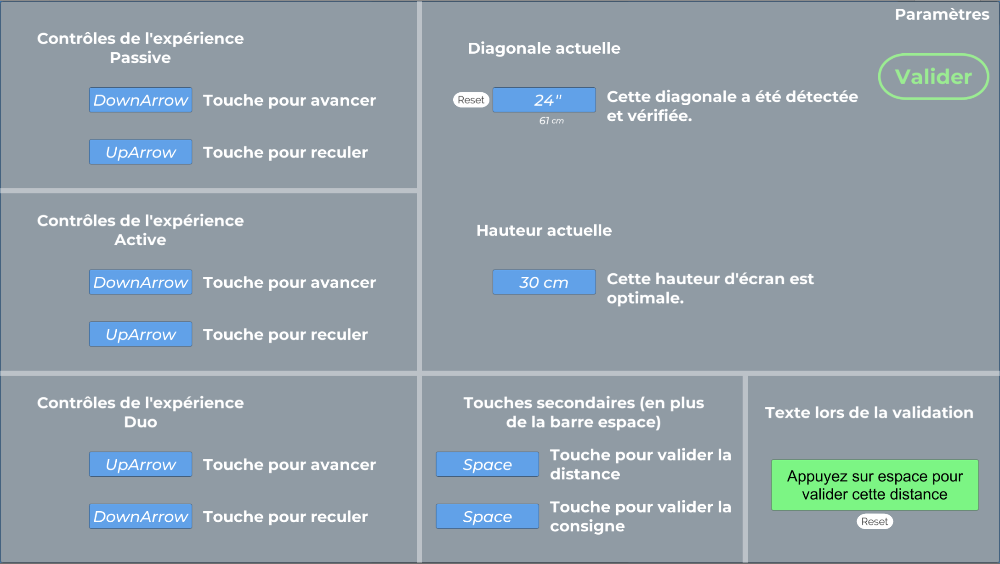
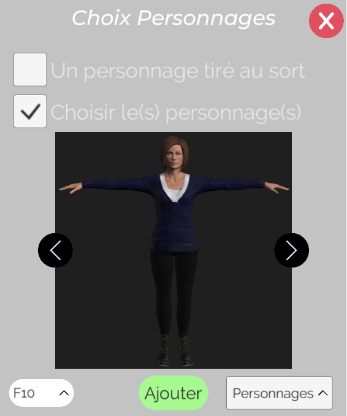
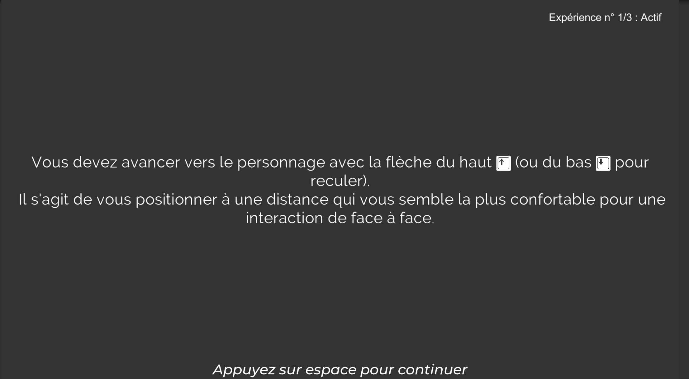
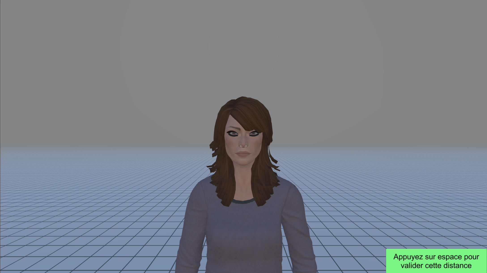
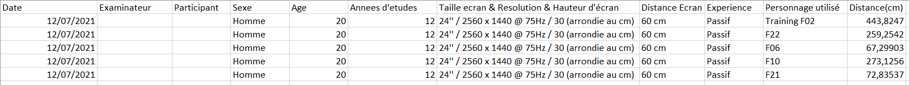

Détails
Distance Inter-personelle
Sous la direction d'un enseignant chercheur de l'ISIR (Institut des Systèmes Intelligents et de Robotique), j'ai eu l'opportunité d'aider l'équipe de recherche à créer un programme 3D sur un projet en lien avec l'étude de la Distance Inter-personnelle
Description
Mon rôle a été de créer un programme, consistant à mesurer chez un utilisateur la distance préférée à laquelle il souhaite se positionner pour une interaction de face-à-face.
Ainsi, mon programme fait apparaitre à l'écran un personnage virtuel 👤, qui est capable d'avancer ou de reculer, et de permettre à l'utilisateur de dire STOP lorsque le personnage est à la bonne distance (Condition passive), ou de simuler un déplacement de l'utilisateur (Condition Active).
Mon programme détecte automatiquement la hauteur de l'écran, pour procéder aux calculs

(Car une mauvaise hauteur d'écran peut enjandrer de mauvais calculs)
Et propose des menus complètement personnalisés et beaux pour faciliter le travail des expérimentateurs.

Exemple de menus

Détections de touches, et même une base de données de diagonales d'écrans pour éviter les erreurs utilisateurs
La création de 12 personnages 3D.

Exemple de personnage
Intégration d'émogis dans un texte, pour faciliter la lecture.

Exemple de "consigne"
Des personnages 3D réalistes pour faciliter la projection des participants

Exemple de manipulation
Mon programme permet de sauver les résultats observés dans un fichier CSV lisible sur Excel

Exemple de résultats
Le code et les assets ont entièrement été fait par moi
Informations
Statut : Terminé
Language utilisé : C# &